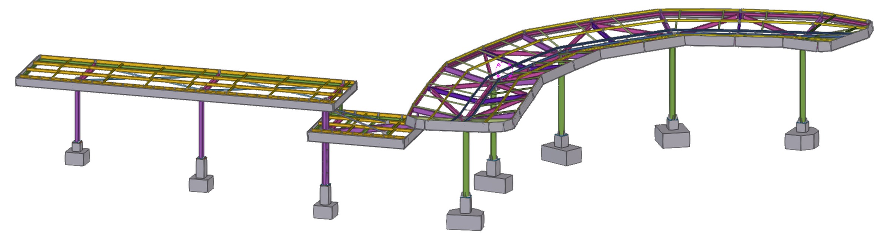
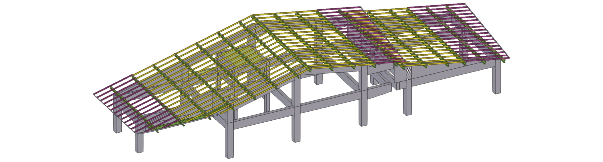
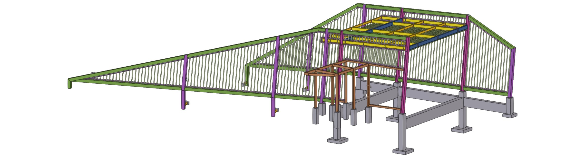
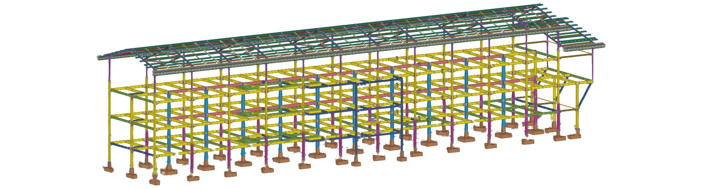

STRUCTURAL MODELLING
The Breeze Rejuvenation
Interactive IFC model preview and technical project notes.
MY PORTFOLIO YOGYAKARTA, ID
I'm Dimas Fathurrahman — a junior technical drafter with a background in building design and exposure to structural modelling, drawings, and project documentation.
From building design fundamentals to technical drawings and structural modelling.
SCROLL TO EXPLORE ↓01 — ABOUT
A little context
behind the work.
I studied Building Design and Information Modelling (DPIB), and have worked around technical drawing, estimating, purchasing, and project administration. Those roles have helped me understand that good technical work is not only about the model — it is also about clarity, coordination, and keeping documents usable.
I'm continuing to develop my skills in Tekla Structures and AutoCAD. This portfolio is a growing record of relevant work and learning, with project scope described as accurately as possible.
02 — SELECTED WORK
A few areas of technical work.
Use the arrows to browse.

STRUCTURAL MODELLING
Interactive IFC model preview and technical project notes.

STRUCTURAL MODELLING
Steel roof frame model prepared in Tekla Structures.

STRUCTURAL MODELLING
Interactive IFC model preview of a steel gate entrance structure.

STRUCTURAL MODELLING · IN PROGRESS
Structural steel model and shop drawings for a warehouse building.
AUTO-ROTATE · PAUSES ON HOVER
03 — CONTACT
I'm open to junior technical drafting, Tekla modelling, and project support opportunities.